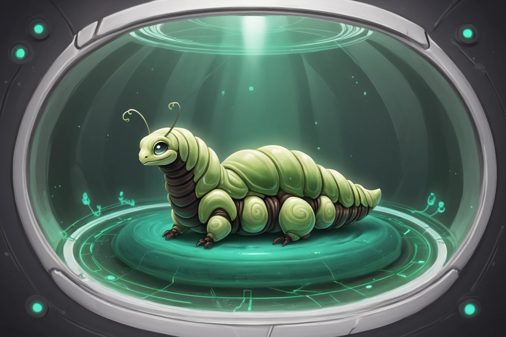
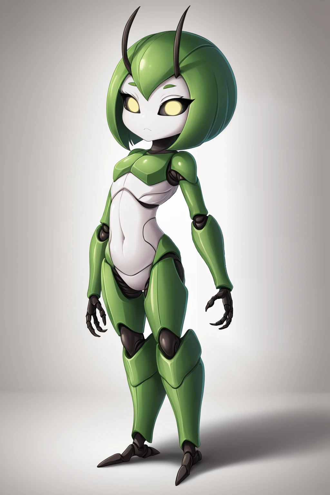
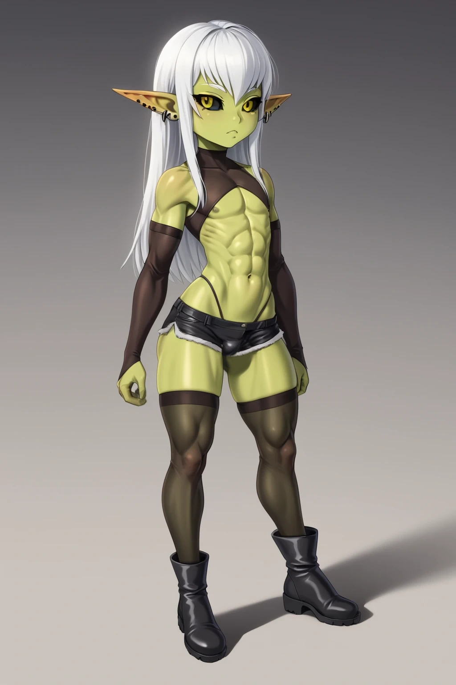
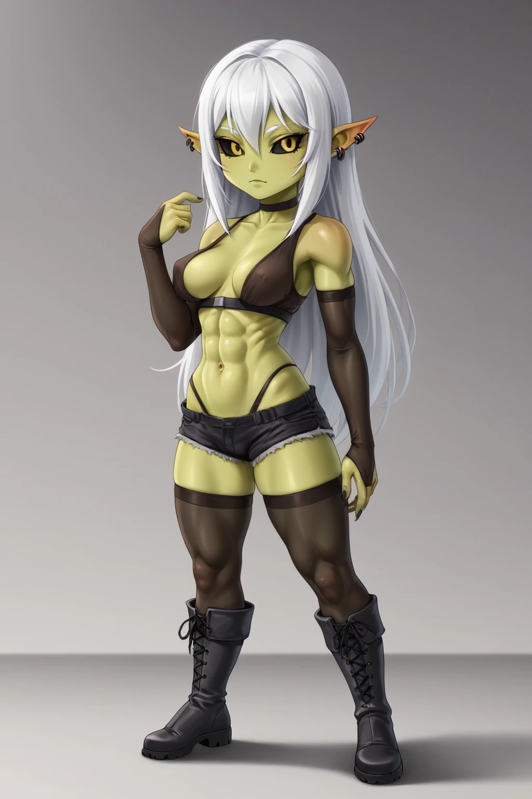
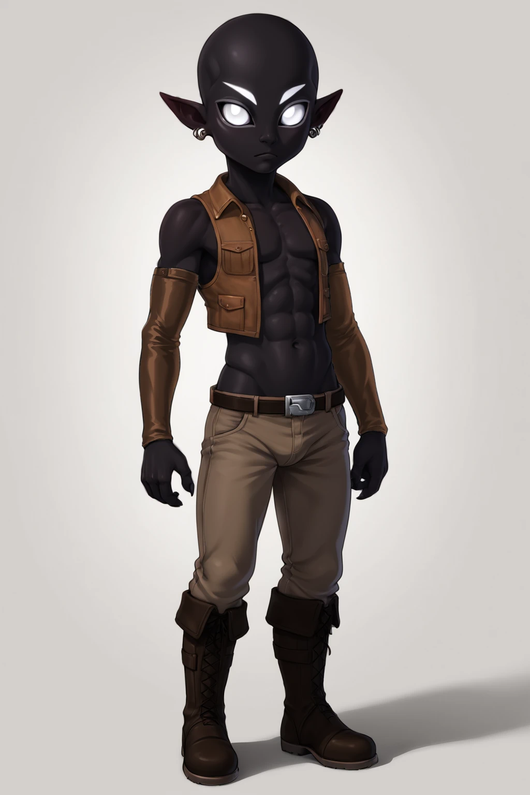
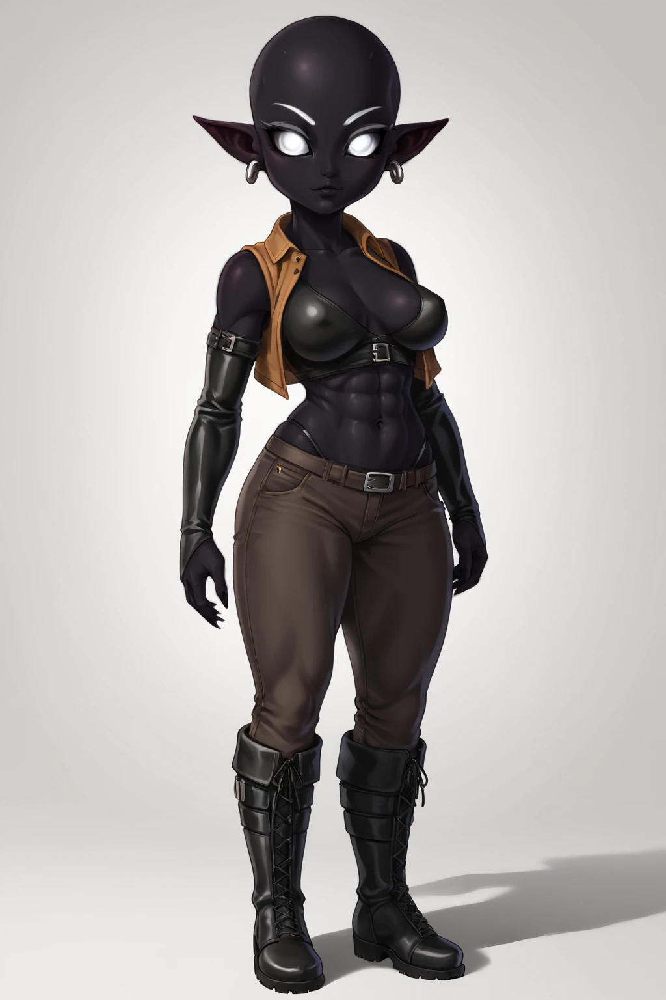

"The first of us to find your planet was Captain Kellen. He crashed in Aurora, Texas on April 17, 1897. He died on impact. You gave him a proper burial. Coffin. Headstone. Mourners. Even had a priest out there. You're alright."
Codex
Name: Gray(s) Sexes: Genderless at birth, Male and Female in Adult Stages. Height: Average adult height is 147 - 154 cm (4'10 - 5'1"). Weight: Average adult weight is 30 - 36 kg (65-80 lbs)/ Hair: Grays only possess hair in their Young Adult stage, and it is always white. Eyes: A Gray's eyes are always pale yellow or white, with black sclera. Ears: Despite common beliefs amongst humans, Grays have small pointed ears.
Appearance
The Grays are well known to most humans due to popular culture. Much of what is believed about them is rooted in the truth. They are indeed gray-skinned humanoids from the Zeta Reticuli system (Specifically the planet Zarkon) who are shorter than humans. There are however a few misconceptions due to the cell-like society used by the Grays instead of a government.
The biggest misconception is that Grays have no ears. This is untrue, as Grays naturally have slender pointed ears that stick out from the sides of their heads. Nearly all Grays wear ear piercings which are of religious significance, marking their sect and rank within the sect. The misconception of them being earless comes from humans' primary contact with the Grays being with the Cult of Kaloth, whose members have their ears surgically removed in memory of their faith's founder who was martyred.
The Cult of Kaloth is a sect of Psykism, one of the Gray's major religions. Its primary focus is on self-refinement, pushing its members toward a balance of individuality and collectivism under a philosophy similar to altruistic egoism. It's not a very popular sect but is seen as "mostly harmless" by the majority.
It's most notable for its members having their ears removed and refusing to rear more than a single child.
The Gray's humanoid appearance is only for their later life stages. It's difficult to classify Grays with Earth's taxonomy as they express traits found in mammals, insects, and plants. They give live birth to their young, but their young are grub-like in shape and undergo several metamorphosis to develop into a humanoid later in life. At one point in their life, they survive primarily on sugar, fluids, and sunlight, only to eventually become omnivores needing a balance of animal proteins and plant products.
Even their characteristic gray skin is not something they carry for life. A Gray is only gray in their Adult life stage, with their exoskeleton and skin being a pale green prior to their (typically) final metamorphosis.
The name Gray as given to the Grays by Humans happens to align with their own word for their culture as both Grays and Humans use the word "gray" to refer to a spectrum of moral and ethical options between those purely good and purely evil. The Grays chose their species name after a major religious shift which saw nearly their entire population convert to Psykism, which holds being "the balance between good and ill" as one of its primary tenants. Thus, "Gray".
Psykism is best understood through the etymology of its name. The Psyk comes from Psyche, making the religion's name in essence "The Feeding of the Soul". The primary driving idea behind religion is that true spiritual enlightenment cannot come wholly from within, nor does it come wholly from external sources. Rather, it requires a balance of both self-improvement and community involvement.
While this could be said of many if not most religions, Psykism is unique in it preaches the value of culture as a means of assisting individuals with their desires, and that it is up to individuals to provide for their own needs. In other words, people should be self-sufficient for their own survival, and the community should exist to serve each individual equally. The real-world applications of Psykism are rooted in psychology, which limits its beneficial effects primarily to the Grays themselves.
As one might expect of a religion based on psychology, it was founded not by mystics nor the spiritual, but rather, by scientists. The religion is effectively a hack for a Gray's body, mind, and soul which maximizes individual happiness and community contentment. There are some objectors to the religion due to its origins as a scientific wellness theory, who criticize it as "Science wearing the flesh of spirituality so the masses will swallow it." However, it works.
Due to Psykism genuinely bringing fulfillment and joy to nearly all of its adherents, one is hard-pressed to find a Gray who isn't a member of one of Psykism's many sects.
Environs Typically Inhabited
Grays are an example of Auzofauna, organisms that desperate nitrogen, can tolerate an oxygenated environment, and react to high levels of carbon dioxide by becoming intoxicated in some fashion (Grays react to levels of CO2 above 1.28% in a similar way to caffeine, while becoming far less risk-averse.). Much like Humans, Grays can adapt to almost any environment and will rapidly fill any space they can survive into an equilibrium population. Despite this, their reproduction depends on large amounts of fresh-water algae to feed their young, resulting in a general preference for biomes with large amounts of still water.
Their homeworld, Zarkon, is primarily swamps, wetlands, and rainforests. It has several large badlands and deserts, which while habitable for Grays are not desirable living areas.
Life Cycle

Gray: Grub Stage
The Grays' life cycle is complex, as one would expect of a species with mammalian, insectoid, and vegetative traits. Grays are born life, much like mammals, but begin life in their first stage, commonly translated as "grubs". In this form, Grays are extremely vulnerable to environmental and predatory conditions and spend the majority of their time feeding. They can consume ages to survive, but require their mother's milk to grow and mature into their next stage.
Grubs are typically birthed in litters of 4-6 but are not social. They compete with one another for food, up to and including killing one another to prevent others from consuming "their" food supply. Due to this instinctual and unmitigable behavior, Grays place their grubs in individual terrariums to raise them to the next life stage. These terrariums are much akin to how various reptiles and fish are kept by humans rather than cradles as one might suspect. Combined with just how little a Grub resembles an adult or even young adult Gray, it has become a common mistake to assume a Gray's child is their pet.

Gray: Nymph Stage
After several months of feeding, the grub spins a silken cocoon and pupates for 2-3 years. During this time it must be kept cool and out of harsh light or it will die. The pupa will eventually hatch into the Gray's second stage, commonly translated as "Nymph". Nymphs are children biologically and culturally. They are capable of communication and moderate labor but are relatively simple creatures biologically wired to learn. Nymphs are genderless both mentally and physically, but over their 5 years in the life stage they will develop preferences for various behaviors which depending on their local culture will tip the needle towards a male or female persona. This persona is only solidified and expressed during the months leading up to their final molt (Usually within a couple months of their 5th hatchday.).
Nymphs are extremely social, much more so than most species children. This extends not to one another, but to adults. Nymphs do enjoy playtime, but are hardwired to learn adult tasks and consequently enjoy learning trades and other forms of work as much or more than play. It's extremely common in Gray families to see Nymphs doing simple jobs or easy labor without being asked, simply because they know what to do, how to do it, and recognised it needed doing.
This trait is nurtured and fostered by their families, as it is the key driving mechanism behind their afformentioned sex selection. The mechanisms behind Gray sex selection are entirly psycological and therefore culturally sensative. If a particular group of Grays see cooking as "men's work" and a Nymph comes to love cooking, they are more likely to be biologically male uppon reaching their next life stage. Conversely, if cooking is seen as "woman's work" the same Nymph would be more likely to become female. This process needs to be guided by the Nymph's parents primarily due to the fact that if they are undecided upon their final molt it's possible for a Nymph to never develop a sex, or be sterile due to having blended various sex characteristics. Such individuals are not shunned in Gray's societies, but it is seen as an unfortunate accident parents should help their children avoid.


Male and Female Grays: Young Adult Stage
When a Nymph molts for the final time, they will emerge as a Young Adult. Culturally, a Young Adult is a full adult member of society, expected to work for their community, and entitled to all rights within their culture afforded to adult members. The soul exception being that Young Adults are not allowed to be in positions of leadership due to their psionic abilities being in a developing state.
Biologically, Young Adults have more in common with plants than insects. Their skin is notably green and preforms a "souped-up" version of photosynthesis which when combined with a diet high in sugars and fluids provides a gross excess of cellular energy. What energy isn't burned to sustain their life and through whatever physical activities they are doing goes directly to developing their brain tissue and the many neural clusters throughout their body which permit their psionic abilities function and growth.
While Young Adult Grays are interested in romantic relationships, both seeking them out and often entering into life-long partnerships, they are not sexually mature. This is not to say a sexual relationship is damaging to their psyche (indeed the lack of one can be quite harmful for many) but rather is strictly in the biological sense. Young Adult Grays do not produce gamete cells and cannot reproduce. Culturally this biological fact is often called the "trial run", and seen as a way to mature and grow as an adult without the risk of becoming a parent.
The Young Adult stage lasts for 30-45 years, ending when the Gray experiences a several week long metamorphosis. During this change their flesh turns gray, their eyes loose their golden sheen, and their hair will fall out. It's not uncommon for a Gray to experience a growth spurt of 10-15 cm (3' - 6') during this change as well. Once the metamorphosis is complete, the Gray has lost nearly all of their non-mammal traits, is capable of reproduction, and their latent psionic abilities are now active.


Male and Female Grays: Accended Stage
This life stage is called Adult, and for nearly all Grays is their final form. Biologically speaking, this is the time evolution dictates the Grays reproduce, hence, nearly all Adults will quickly have children (they almost certainly already have a life partner). Aside from raising children, Adults focus on developing their psionic powers. No powers come naturally to Grays, all require years of training and practice. However, the most easily learned power is a form of petra natural recall and calculation, allowing greater-than-natural predictive capabilities. This power does not let the Gray see the future, but does afford them the ability to plan ahead up to several years in advance, with most events occurring during that time being successfully predicted. This ability is universally important throughout Gray cultures and is the reason Young Adults are not permitted to assume leadership roles.
The Adult Stage lasts for approximately 80 years, with each individual remaining physically fit (assuming a properly balanced omniverious diet) and at or near their prime until their final decade. At which point the Gray will age in a fashion similar to humans, eventually dying from natural causes. Unless they are fortunate enough to reach their Fifth Life Stage, usually translated as "Ascended".
The Ascended Stage is not fully understood. It is known to be triggered by environmental influences combined with well developed psionic powers, but the specifics are nebulous and elusive. If a gray is going to reach this life Stage, they will know at the dawn of their final decade. Their skin will begin to darken rather than grow pale. Their physical fitness will sharply improve. Their psionic powers grow in potency and stamina by at least an order of magnitude. The transformation typically takes 2-3 years, and ends with the Gray's eyes turning white (Occasionally their eyes will also glow very faintly.) and the Gray growing eyebrows.
Ascended Grays are sustained by their psionic power. They do not require food or water (though can eat and drink if they wish), nor will they die of natural causes. Their most common cause of death is overuse of their powers emptying their natural energy reserves, and causing them to immediately drop dead. Ascended who die in this fashion cannot be revived permanently, but can be kept alive by medical devices as long as desired. However whatever psionic force sustained them is gone for good.
Ascended Grays can still have children, and their children are healthier than those of an Adult. However, due to reasons unknown, all of their children are sterile.
Due to their extreme rarity (1:100,000,000 at best) Ascended Grays hold a lot of reverence in Gray society, and often assume roles of supreme leadership within particular groups. Its also quite common for them to become sages or gurus for their chosen professions.
History
Grays are not an old species. They have been starfaring for a mere 238 years (as of the year 2024 of the Human Calendar) and evolved to their current form approximately 23,000 years ago. Much of their history was lost in a near extinction event occurring 1290 years ago when their homeworld was struck by a M-type asteroid of sufficient size to crack the crust of their planet and end 87.49% of all extant species.
Despite this disaster, the Grays were able to quickly return to an industrial society despite needing to switch from bronze to iron in most regions due to the damage to their plant's crust reshuffling many ore veins.
The most notable aspect of their recovery is also the Grays' most unique trait. They do not have any form of government. Individual families cooperate with one another in informal Clan structures, but no further government exists. There is no regional nor central authorities. All major decisions are handled through democratic processes where affected parties vote on courses of action. In many ways their culture resembles a criminal organization such as a mafia.
As a starfaring civilization, the Grays are best known for their total disregard for the Galactic Bureaucracy. In the days before the Quiet Sector the Grays had a loose but pleasant relationship with the previous administration, serving as scouts and logistics core members. But, after the new administration moved the capital and consequently the rise of the Quiet Sector, the Grays have become entangled with the less dark side of the Underworld. Primarily as smugglers (generally low-risk high-profit substances such as recreational drugs), but also arms dealing, and occasional acts of piracy.
The Grays are the first species to discover Humans, who they have a general respect and appreciation for due to their first contact being the accidental death of a cultural hero, who was simply given a proper burial by the humans who found him. While they generally despise Earth's governments, they typically like individual humans. Some Grays even find humans attractive due to their similar-ish morphologies.